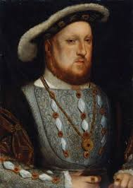
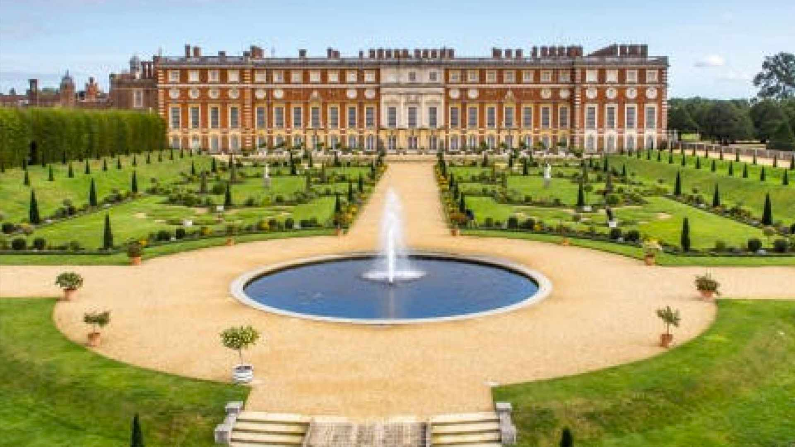

The Tudor's
back

King Henry VIII
Reign: 1509 - 1547
Key Facts.
Birth: 28th June 1491, Greenwich Palace.
Father: King Henry VII.
Mother: Elizabeth of York.
Accession: 21st April 1509.
Coronation: 24 June 1509.
Queen: 1st Catherine of Aragon (m.11th Jun 1509; d.1536)
Queen: 2nd Anne Boleyn (m.24th Jan 1533; d.1536)
Queen: 3rd Jane Seymour (m.30th May 1536; d.1537)
Queen: 4th Anne of Cleves (m.6th Jan 1540; d.1557)
Queen: 5th Catherine Howard (m.28th Jul 1540; d.1542)
Queen: 6th Catherine Parr (m.12th Jul 1543; d.1548)
Succeeded by: His son Edward VI, aged 9
Greatest Achievement: Introducing the Protestant Reformation to England.
Key Dates.
- 16th Aug 1513: Defeats French at the Battle of the Spurs.
- 20th Feb 1516: Birth of future Queen Mary I.
- 1518: Treaty of London, mutual defence pact between England, Spain, France and Holy Roman Empire.
- 7th Sept 1533: Birth of the future Queen Elizabeth I.
- 28th Nov 1524: Act of Supremacy make Henry 'Supreme head of the Church of England'.
- 1539: Publication of the 'Great Bible' in english.
- 1541: Henry declares himself King of Ireland.
- Death: 13th Feb 1547, Whitehall Palace.
History.com Link
Hampton Court Palace, Home of Henry VIII

© 2022 All rights reserved | Designed by Graham Williamson.